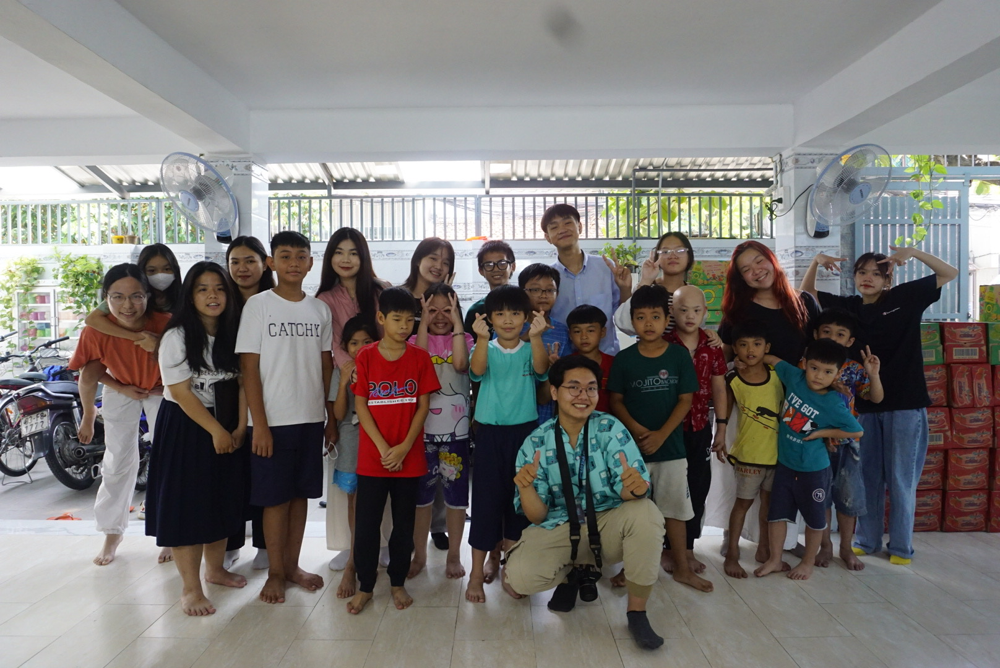
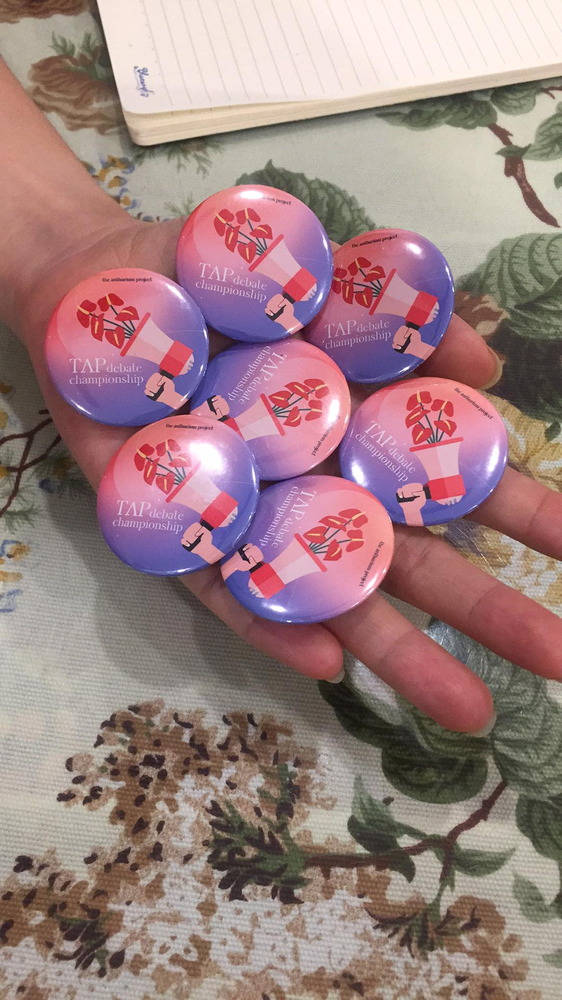

<!DOCTYPE html>
<html lang="en">

<head>

  <meta charset='UTF-8'>
  <meta name="viewport" content="width=device-width, initial-scale=1, shrink-to-fit=no">
  <link rel="shortcut icon" href="https://cdn-icons-png.flaticon.com/512/5821/5821159.png">
  <meta name="description" content="Resume">
  <meta name="author" content="862457246">

  <title Karen Vo - Business Administration</title>

  <!-- Bootstrap core CSS -->
  <link href="vendor/bootstrap/css/bootstrap.min.css" rel="stylesheet">

  <!-- Custom fonts for this template -->
  <link href="https://fonts.googleapis.com/css?family=Saira+Extra+Condensed:500,700" rel="stylesheet">
  <link href="https://fonts.googleapis.com/css?family=Muli:400,400i,800,800i" rel="stylesheet">
  <link href="vendor/fontawesome-free/css/all.min.css" rel="stylesheet">

  <!-- Custom styles for this template -->
  <link href="css/resume.min.css" rel="stylesheet">

</head>

<body id="page-top">
  <nav class="navbar navbar-expand-lg navbar-dark bg-primary fixed-top" id="sideNav">
    <a class="navbar-brand js-scroll-trigger" href="#page-top">
      <span class="d-block d-lg-none">Karen Vo</span></span>
      <span class="d-none d-lg-block">
        
      </span>
    </a>
    <button class="navbar-toggler" type="button" data-toggle="collapse" data-target="#navbarSupportedContent" aria-controls="navbarSupportedContent" aria-expanded="false" aria-label="Toggle navigation">
      <span class="navbar-toggler-icon"></span>
    </button>
    <div class="collapse navbar-collapse" id="navbarSupportedContent">
      <ul class="navbar-nav">
        <li class="nav-item">
          <a class="nav-link js-scroll-trigger" href="#about">About</a>
        </li>
        <li class="nav-item">
          <a class="nav-link js-scroll-trigger" href="#experience">Experience</a>
        </li>
        <li class="nav-item">
          <a class="nav-link js-scroll-trigger" href="#education">Education</a>
        </li>
        <li class="nav-item">
          <a class="nav-link js-scroll-trigger" href="#portfolio">Portfolio</a>
        </li>
      </ul>
    </div>
  </div>
  </nav>

  <div class="container-fluid p-0">

    <section class="resume-section p-3 p-lg-5 d-flex align-items-center" id="about">
      <div class="w-100">
        <h1 class="mb-3">Karen Vo
        </h1>
        <div class="subheading mb-5">Business Administration (Finance)</div>
        <p class="lead mb-4">I am Karen Vo from UC Riverside. I’m originally from Vietnam, but I moved to the United States in 2018. Wanting to get involved and help better my community at UCR, I joined ASUCR as a Senator Intern and Highlander Action Committee. I also tutored Math, English, and Science for Vietnamese ethnic minority students from 6th to 9th grade and opened a free Mandarin class for high school students.<br><br>

        After immigrating to the U.S, I started to get interested in the East Asian cultural sphere and history as I viewed this interest as a reminder of my heritage. I began teaching myself Mandarin due to the overlaps and similarities in characters and pronunciation between the language and Vietnamese, my mother tongue in 9th grade. This deeper dive led me to join various history and culture projects to spread my research further because many primary resources are written in Chinese.<br><br>

        I’ve been drawing since I was very little. I participated in a lot of drawing contests since kindergarten in Vietnam and have continued it as a hobby till now. I joined many non-profit student organizations and designed posters, flyers, and merchandise for events and contests.
        </p>
        <div class="social-icons">
          <a target="_blank" id="socialicon-1" href="https://www.instagram.com/karenn_voo/">
            <i class="fab fa-linkedin-in"></i>
          </a>
          <a target="_blank" id="socialicon-2" href="https://github.com/avo095">
          </a>
          <a target="_blank" id="socialicon-3" href="https://www.facebook.com/karen.vo.94/">
            <i class="fab fa-twitter"></i>
          </a>
          <a target="_blank" id="socialicon-4" href="mailto:karen.vo1@gmail.ucr.edu">
            <i class="fa fa-envelope"></i>
          </a>
        </div>
      </div>
    </section>

    <hr class="m-0">

    <section class="resume-section p-3 p-lg-5 d-flex justify-content-center" id="experience">
      <div class="w-100">
        <h2 class="mb-5">Experience</h2>

        <div class="resume-item d-flex flex-column flex-md-row justify-content-between mb-5 experience">
          <div class="resume-content">
            <h3 class="mb-0">Tutor</h3>
            <div class="subheading mb-3"><a target="_blank" href="https://www.facebook.com/traitimyeuthuong.npo">Trai Tim Yeu Thuong</a></div>
            <p>
              • Tutored English, Art, Math, and Science for Vietnamese ethnic minority children from 6th to 9th grade.<br> 
              • Created worksheets, lecture plans, and classroom activities.<br>
              • Collaborated with tutors from New York for English-speaking practice sessions.<br>
              • Sold paintings to raise funds.<br>
            </p>
          </div>
          <div class="resume-date text-md-right">
            <span class="text-primary">Jul 2023 - Aug 2023</span>
          </div>
        </div>

        <div class="resume-item d-flex flex-column flex-md-row justify-content-between mb-5 experience">
          <div class="resume-content">
            <h3 class="mb-0">English instructor</h3>
            <div class="subheading mb-3"><a target="_blank" href="https://www.facebook.com/vincent.d.nguyen.3">Vincent D Nguyen</a></div>
            <p>
              • Coached >30 elderly people who don’t speak English for their American citizenship interviews, which resulted in helping 4 people successfully get their citizenship.<br>
              • Translated paperwork from Vietnamese to English, such as birth certificates, death certificates, discharge records, and divorce applications.<br>
            </p>
          </div>
          <div class="resume-date text-md-right">
            <span class="text-primary">Nov 2021 - Mar 2022</span>
          </div>
        </div>

        <div class="resume-item d-flex flex-column flex-md-row justify-content-between mb-5 experience">
          <div class="resume-content">
            <h3 class="mb-0">PR Intern</h3>
            <div class="subheading mb-3"><a target="_blank" href="https://pearllemonseoagency.business.site/?utm_source=gmb&utm_medium=referral">Pearl Lemon</a></div>
            <p>
            • Watched 42 PR training videos.<br>
            • Contacted and emailed journalists for interviews and product samples.<br>
            • Found journalists on HARO, Food4Media, ResponseSource, and DotStar.<br>
            • Attended group meetings on current trends and field the company is targeting.<br>

          </p>
          </div>
          <div class="resume-date text-md-right">
            <span class="text-primary">Jan 2024 - Present</span>
          </div>
        </div>

       <div class="resume-item d-flex flex-column flex-md-row justify-content-between mb-5 experience">
          <div class="resume-content">
            <h3 class="mb-0">Member of Design Department</h3>
            <div class="subheading mb-3"><a target="_blank" href="https://www.facebook.com/theanthuriumproject">The Anthurium Project</a></div>
            <p>
            • Designed 2-4 Facebook posts each month based on the posts’ contents while being on-brand with the project’s design theme (with illustrations of anthuriums and lotuses).<br>
            • Designed Google Slides for the project’s debate events on “Gender Roles and Intersectionality”, “Rape Culture and Crimes Against Women”, and “Women and Religion”.<br>
            • Designed merchandise (e.g. pins, stickers, and thank you cards).<br>

          </p>
          </div>
          <div class="resume-date text-md-right">
            <span class="text-primary">Nov 2021 - Oct 2022</span>
          </div>
        </div>

       <div class="resume-item d-flex flex-column flex-md-row justify-content-between mb-5 experience">
          <div class="resume-content">
            <h3 class="mb-0">Member of Content Department</h3>
            <div class="subheading mb-3"><a target="_blank" href="https://www.facebook.com/suradio2022">Su Radio</a></div>
            <p>
            • Researched Vietnamese literature, history, and culture through online articles published by the Vietnamese, Chinese, and France governments and the Vietnam National University library to write posts and podcast scripts on Confucianism, Taoism, Buddhism, Lunar New Year’s feng shui, and Ho Xuan Huong (queen of Nom poetry).<br>
            • Cooperated with the Radio Department and Design Department to edit the podcasts.<br>

          </p>
          </div>
          <div class="resume-date text-md-right">
            <span class="text-primary">Nov 2021 - Aug 2022</span>
          </div>
        </div>

       <div class="resume-item d-flex flex-column flex-md-row justify-content-between mb-5 experience">
          <div class="resume-content">
            <h3 class="mb-0">Member of Content Department</h3>
            <div class="subheading mb-3"><a target="_blank" href="https://www.facebook.com/clbvanhoatrunghoatrandainghia">Chinese Culture Club of Tran Dai Nghia High School for the Gifted</a></div>
            <p>
            • Researched Chinese history and culture through newspaper and personal interviews to write posts and podcast scripts.<br>
            • Translated content from Vietnamese to Mandarin for social media posts.<br>
            • Spoke in Mandarin and Cantonese for the club’s podcasts.<br>
            • Conducted research from Vietnamese, Mandarin, and English sources to gather information from different perspectives and cultures to ensure that our posts offer a balanced perspective and avoid culture wars.<br>
            • Produced two videos on the historical development of Sino-Vietnamese and its influences from Mandarin and Cantonese.<br>

          </p>
          </div>
          <div class="resume-date text-md-right">
            <span class="text-primary">Sep 2021 - Aug 2022</span>
          </div>
        </div>

      </div>

    </section>

    <hr class="m-0">

    <section class="resume-section p-3 p-lg-5 d-flex align-items-center" id="education">
      <div class="w-100">
        <h2 class="mb-5">Education</h2>

        <div class="resume-item d-flex flex-column flex-md-row justify-content-between mb-5 education">
          <div class="resume-content">
            <h3 class="mb-0">UC Riverside</h3>
            <div class="subheading mb-3">Bachelor of Science in Business Administration</div>
            <div>Concentration in Finance</div>
          </div>
          <div class="resume-date text-md-right">
            <span class="text-primary">September 2023 - June 2027</span>
          </div>
        </div>

      </div>
    </section>

    <hr class="m-0">

    <section class="resume-section p-1 p-lg-5 d-flex align-items-center" id="portfolio">
      <div class="w-100">
        <h2 class="mb-5">Portfolio</h1>
        <center>
            
            <br>
            
            <br>
        </center>
      </div>
    </section>

    <hr class="m-0">
    <center>&copy; <script type="text/javascript">
  document.write(new Date().getFullYear());
  </script> Karen Vo</center><br>
  </div>
  <!-- Bootstrap core JavaScript -->
  <script src="vendor/jquery/jquery.min.js"></script>
  <script src="vendor/bootstrap/js/bootstrap.bundle.min.js"></script>

  <!-- Plugin JavaScript -->
  <script src="vendor/jquery-easing/jquery.easing.min.js"></script>

  <!-- Custom scripts for this template -->
  <script src="js/resume.min.js"></script>
</body>
</html>
